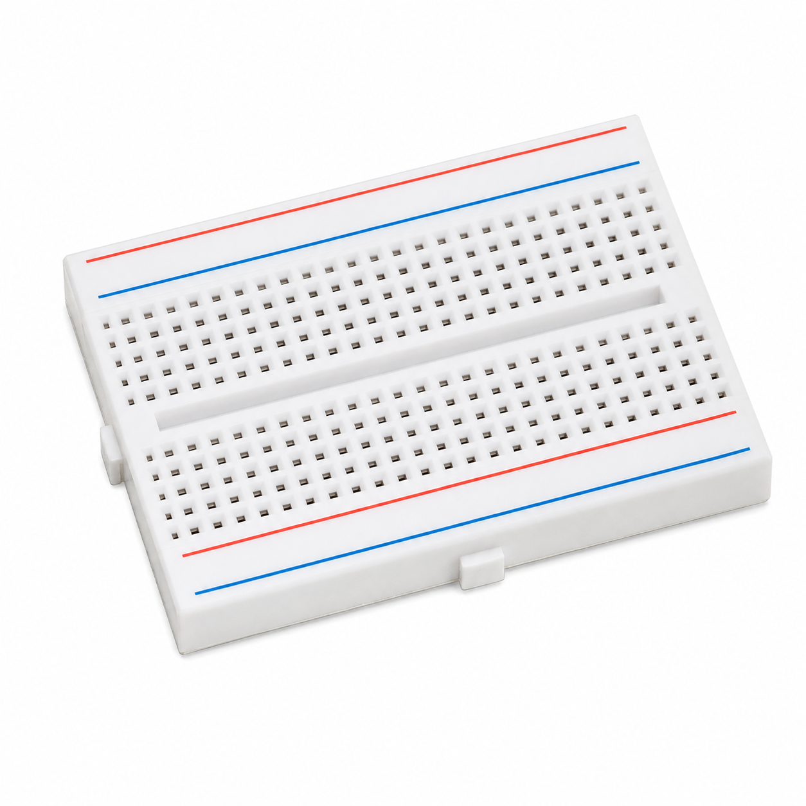

touch_counter.py

Touch-Based Digital Counter

To design a touch-based digital counter using a Raspberry Pi 4B, a touch sensor, and a 4-digit 7-segment display. Each touch increases the counter value, which is displayed from 0000 to 9999.
The Raspberry Pi reads the TTP223 touch sensor on GPIO23. A new touch increases the counter by one.
The four-digit 7-segment display is refreshed using multiplexing so the current count remains visible in four-digit format.

Main controller for touch detection and display control.

Detects each touch used to increase the counter.

Displays the counter value from 0000 to 9999.

Current-limiting resistors for the display segments.

Used to assemble the circuit.

Used for GPIO, power and ground connections.
| Component / Signal | Physical Pin / Terminal | Raspberry Pi Connection |
|---|---|---|
| 7-Segment Segment A through 220Ω | Pin 29 | GPIO5 |
| 7-Segment Segment B through 220Ω | Pin 31 | GPIO6 |
| 7-Segment Segment C through 220Ω | Pin 33 | GPIO13 |
| 7-Segment Segment D through 220Ω | Pin 35 | GPIO19 |
| 7-Segment Segment E through 220Ω | Pin 37 | GPIO26 |
| 7-Segment Segment F through 220Ω | Pin 36 | GPIO16 |
| 7-Segment Segment G through 220Ω | Pin 38 | GPIO20 |
| 7-Segment Decimal Point through 220Ω | Pin 40 | GPIO21 |
| DIG1 control | Pin 32 | GPIO12 |
| DIG2 control | Pin 11 | GPIO17 |
| DIG3 control | Pin 13 | GPIO27 |
| DIG4 control | Pin 15 | GPIO22 |
| TTP223 VCC | Pin 1 or 17 | 3.3V |
| TTP223 GND | Pin 6 | GND |
| TTP223 OUT | Pin 16 | GPIO23 |

sudo apt update.sudo apt install python3-rpi.gpio.touch_counter.py.python3 touch_counter.py.Ctrl+C to stop the program.Raspberry Pi Experiment · Code Review
Click an explanation tab to highlight its matching Python source block. Copy Code copies the complete touch_counter.py program.
Select a tab to highlight the corresponding source section.
Touch input: GPIO23. Range: 0000–9999. Debounce pause: 0.15 seconds. Multiplexing enables one digit at a time.
Display interface: The code uses HIGH for lit segments and HIGH to enable a digit. Verify the display type, pinout and suitable digit-driver circuit. Keep digit current within GPIO limits. The 0.15-second debounce pause temporarily interrupts display refreshing.
The counter starts at 0000.
Each new touch increases the displayed value by one.
After 9999, the count returns to 0000.
The Raspberry Pi detects touches from the TTP223 sensor and displays the incrementing count on a correctly interfaced 4-digit 7-segment display.